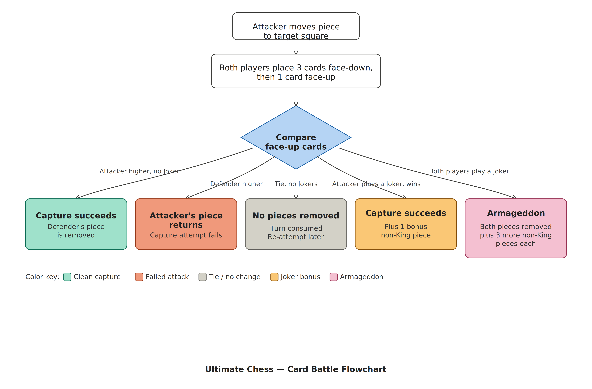

When a player attempts to capture an opponent's piece, both players resolve a card battle before the capture happens. The outcome decides whether the capture succeeds.
| Rank | Notes |
|---|---|
| Joker (Sniper) | Highest possible card. Trumps Aces. See Sniper Rules. |
| Ace | Second highest. Beats all numbered cards. |
| King through 2 | Standard descending rank. King (K) high, 2 low. |

| Result | What Happens | Notes |
|---|---|---|
| Attacker wins | Capture succeeds. Attacker's piece moves to the target square. Defender's piece is removed. | Standard capture. |
| Defender wins | Attacker's piece returns to its original square. | Capture attempt fails. |
| Tie (no Snipers) | The attacking piece returns to its original square. The turn is consumed. Neither player loses a piece. | Re-attempt on a future turn. |
| Attacker wins with Sniper | Capture succeeds. The attacker also takes one additional non-King piece of their choice. | See Sniper Rules. |
| Tie (both Snipers) | Armageddon. Both pieces are removed. Each player also removes three non-King pieces of their choice. | See Armageddon. |